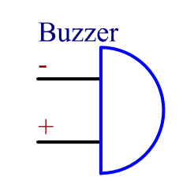

Nota
Ciao, benvenuto nella Community di SunFounder Raspberry Pi & Arduino & ESP32 Enthusiasts su Facebook! Approfondisci le tue conoscenze su Raspberry Pi, Arduino ed ESP32 con altri appassionati.
Perché Unirsi?
Supporto Esperto: Risolvi problemi post-vendita e sfide tecniche con il supporto della nostra comunità e del nostro team.
Impara e Condividi: Scambia consigli e tutorial per migliorare le tue competenze.
Anteprime Esclusive: Accedi in anteprima a nuovi annunci di prodotti e anticipazioni.
Sconti Speciali: Approfitta di sconti esclusivi sui nostri prodotti più recenti.
Promozioni Festive e Giveaway: Partecipa a giveaway e promozioni durante le festività.
üëâ Pronto per esplorare e creare con noi? Clicca [Qui] e unisciti oggi stesso!
1.2.1 Cicalino Attivo
Introduzione
In questa lezione, impareremo a far suonare un cicalino attivo usando un transistor PNP.
Componenti

Principio
Cicalino
Il cicalino è un tipo di dispositivo elettronico integrato, alimentato in corrente continua, ampiamente utilizzato in computer, stampanti, fotocopiatrici, allarmi, giocattoli elettronici, dispositivi elettronici per auto, telefoni, timer e altri prodotti o dispositivi a voce. I cicalini si dividono in attivi e passivi (vedi immagine seguente). Ruota il cicalino in modo che i pin siano rivolti verso l’alto: il cicalino con una scheda verde è passivo, mentre quello con nastro nero è attivo.
Differenza tra un cicalino attivo e uno passivo:

La differenza principale è che un cicalino attivo ha una sorgente di oscillazione interna, quindi emette suoni quando è alimentato. Al contrario, il cicalino passivo non ha questa sorgente e non suona se alimentato da corrente continua; richiede onde quadre con frequenza tra 2K e 5K per funzionare. I cicalini attivi, a causa dei circuiti oscillanti interni, tendono ad essere più costosi di quelli passivi.
Ecco il simbolo elettrico di un cicalino. Ha due pin, uno positivo e uno negativo. Il pin contrassegnato con un + sulla superficie è l’anodo e l’altro è il catodo.
{kind=link}
Controlla i pin del cicalino: il pin più lungo è l’anodo e quello più corto è il catodo. Assicurati di non invertirli durante il collegamento, altrimenti il cicalino non emetterà suoni.
Schema Elettrico
In questo esperimento, si utilizza un cicalino attivo, un transistor PNP e una resistenza da 1k tra la base del transistor e il GPIO per proteggere il transistor. Quando il GPIO17 del Raspberry Pi viene impostato a livello basso (0V) tramite programmazione, il transistor si satura di corrente e il cicalino emette suoni. Quando, invece, il GPIO è impostato a livello alto, il transistor si spegne e il cicalino non suona.

Procedure Sperimentali
Step 1: Costruisci il circuito. (Fai attenzione ai poli del cicalino: quello con l’etichetta + è il polo positivo e l’altro è il negativo.)

Step 2: Apri il file di codice.
cd ~/davinci-kit-for-raspberry-pi/c/1.2.1/
Step 3: Compila il codice.
gcc 1.2.1_ActiveBuzzer.c -lwiringPi
Step 4: Esegui il file eseguibile.
sudo ./a.out
Quando il codice viene eseguito, il cicalino suona.
Nota
Se il programma non funziona o appare un errore come «wiringPi.h: No such file or directory», consulta Il codice C non funziona?.
Codice
#include <wiringPi.h>
#include <stdio.h>
#define BeepPin 0
int main(void){
if(wiringPiSetup() == -1){ //se l'inizializzazione fallisce, stampa un messaggio
printf("setup wiringPi failed !");
return 1;
}
pinMode(BeepPin, OUTPUT); //imposta GPIO0 come uscita
while(1){
//accendi il cicalino
printf("Buzzer on\n");
digitalWrite(BeepPin, LOW);
delay(100);
printf("Buzzer off\n");
//spegni il cicalino
digitalWrite(BeepPin, HIGH);
delay(100);
}
return 0;
}
Spiegazione del Codice
digitalWrite(BeepPin, LOW);
Usiamo un cicalino attivo in questo esperimento, quindi suonerà automaticamente quando collegato alla corrente continua. Questo comando imposta la porta I/O a livello basso (0V), attivando il transistor e facendo suonare il cicalino.
digitalWrite(BeepPin, HIGH);
Imposta la porta I/O a livello alto (3.3V), disattivando il transistor, e il cicalino non suona.